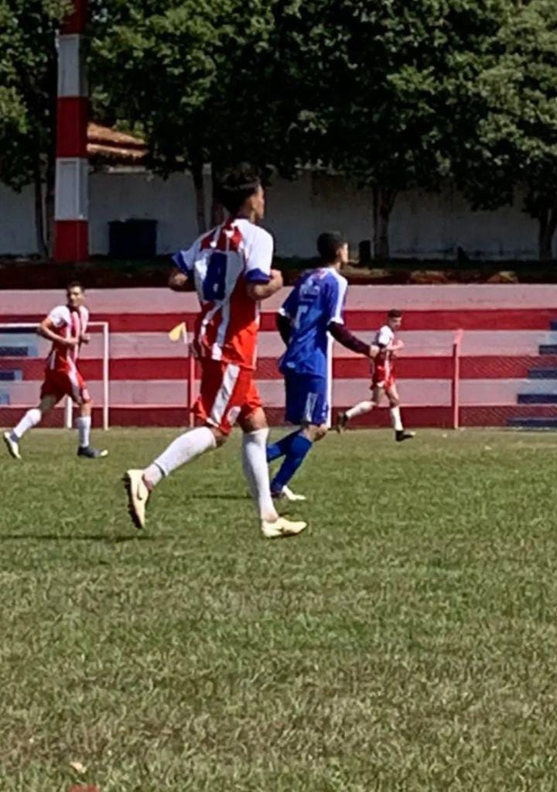
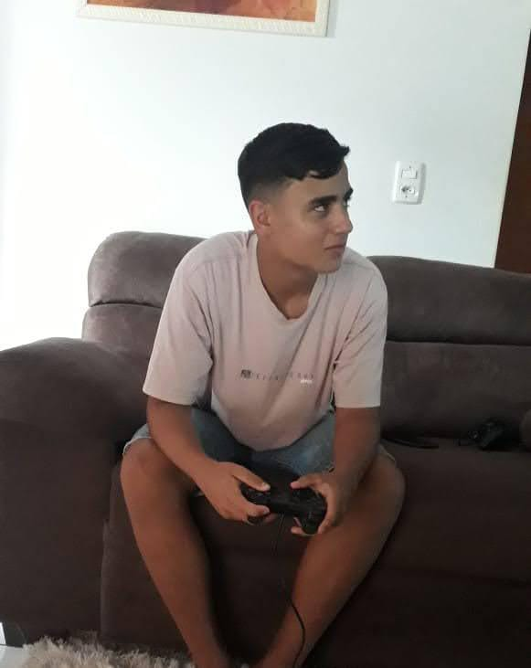
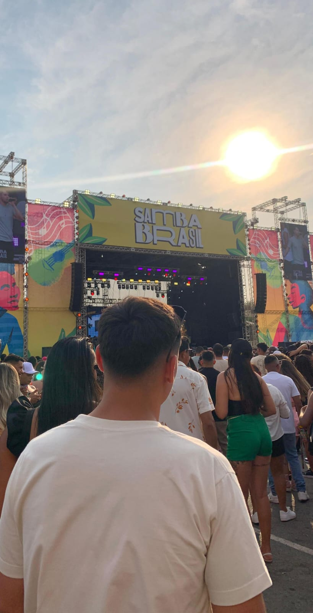

22.30.35_58edeb97.jpg)
Minhas Informações
Minha Formação Acadêmica
Instituto Federal Goiano
Curso: Sistemas de Informação
Período: 2024 - 4° Periodo
Ao longo da minha formação, estou adquirindo conhecimentos sólidos em desenvolvimento de software, banco de dados, redes de computadores e segurança da informação, além de estar constantemente me aperfeiçoando em novas tecnologias.
Minha formação acadêmica teve início em escolas públicas, onde tive a oportunidade de construir uma base sólida. Do 1º ao 4º ano, estudei na Escola Amélia Issa, um período em que aprendi conceitos fundamentais que me acompanharam ao longo da vida. Em seguida, do 6º ao 9º ano, frequentei a escola Estadual, onde pude expandir meus conhecimentos e desenvolver habilidades importantes. No ensino médio, optei por estudar à noite, uma decisão que foi motivada pela necessidade de conciliar meus estudos com o trabalho. Essa experiência me ensinou a gerenciar meu tempo de forma eficiente e a valorizar cada momento dedicado ao aprendizado.
Meus Hobbies
Futevôlei
- Eu jogo futevôlei desde 2020 e, ao longo dos anos, participei de diversos campeonatos que me ajudaram a aprimorar minhas habilidades. Hoje, o futevôlei é o esporte que mais pratico, combinando minha paixão por atividade física com a diversão e o desafio desse jogo dinâmico.
 10.14.18_0e01626f.jpg)
Futebol

- Desde criança, o futebol sempre fez parte da minha vida. Embora hoje em dia não seja a minha maior paixão, ainda tenho um carinho enorme pelo esporte e gosto muito de jogar. Ele me trouxe muitos momentos de diversão e aprendizado, sendo uma atividade que sempre esteve presente em minha trajetória.
Jogos Digitais
 - Comecei a me interessar por jogos digitais ainda na infância, quando tive meu primeiro contato com o PlayStation 2. Passei boa parte dessa fase jogando, e muitos dos jogos daquela época me marcaram profundamente, tanto pelas histórias quanto pela diversão. Até hoje, sigo jogando e acompanhando a evolução dos games, pois eles continuam sendo uma das minhas maiores fontes de entretenimento e relaxamento.
Música
 - Escutar música é uma das minhas formas favoritas de relaxar e me entreter, especialmente o pagode, que é o estilo musical que mais gosto. Todos os dias, no caminho de volta da faculdade, coloco meus fones e me perco nas melodias e letras. É uma maneira de desligar a mente por um tempo e recarregar as energias depois de um dia cheio.
Livros
- Ler se tornou uma das minhas formas favoritas de relaxar e me entreter. Comecei a ler este ano, em 2024, e já me apaixonei por essa atividade. Mergulhar nas páginas de um bom livro é a minha maneira de desligar a mente e recarregar as energias depois de um dia cheio. Até agora, já li alguns livros, mas os que mais me marcaram foram Mais Esperto que o Diabo e Pai Rico Pai Pobre. Ambos me trouxeram lições valiosas e me inspiraram ainda mais a buscar conhecimento e crescimento pessoal.
 08.11.06_967e7b22.jpg)
Local destinado para demonstração do meu portfólio e certificados